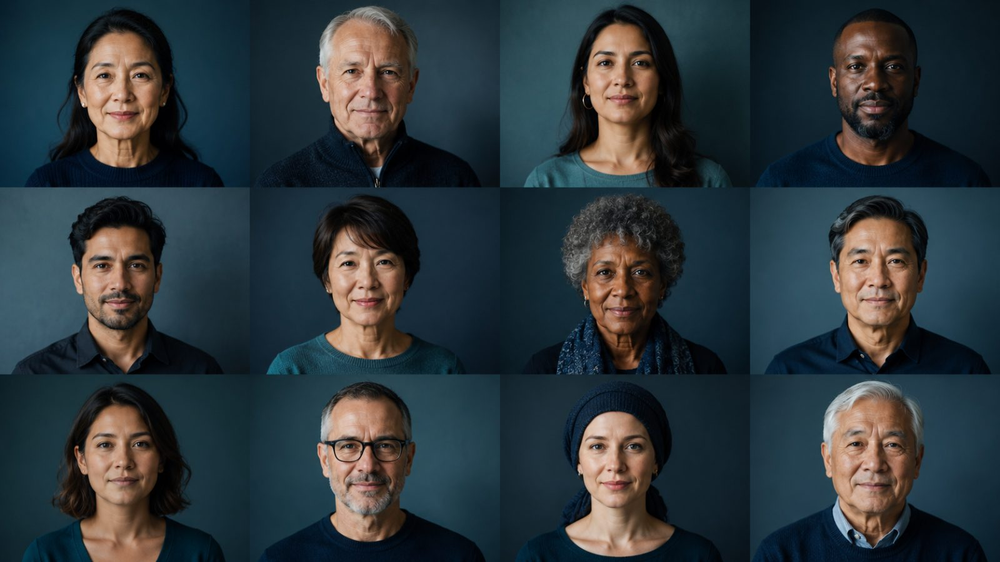
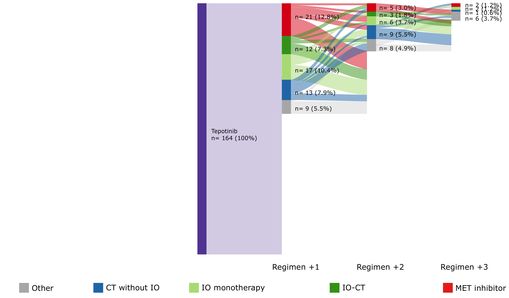
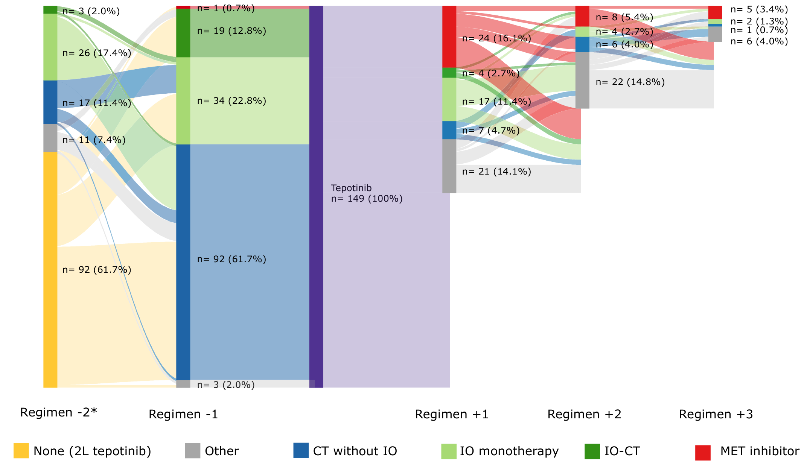

How to use this activity
How to use this resource
- Select the scene or the screen options.
- Look out for interactive elements - Select buttons and icons to reveal data tables, figures, and additional information.
- Knowledge check questions appear throughout. Select your answer; incorrect options will disappear, and the correct answer will be revealed with an explanation.
- This module takes approximately 100 minutes to complete, but we’ve divided this into sections and breakdowns of time so you can better manage your learning journey and time to engage.
Long-term efficacy & safety of tepotinib in METex14 skipping NSCLC
After completing this touchINTERACTIVE, you should be better able to:
1. Provide details of the VISION trial of tepotinib for METex14 skipping NSCLC.
2. Explain the long-term efficacy of tepotinib for METex14 skipping NSCLC overall and in clinically relevant subgroups.
3. Describe the long-term safety profile of tepotinib in patients with METex14 skipping NSCLC.
Note: A full reference list with links is provided at the end of the activity
Overview contents
Expected duration ≈ 15 minutes
The MET oncogenic driver in NSCLC
The MET oncogenic driver in NSCLC
MET pathway dysregulation, through METex14 skipping, MET amplification, or fusions, drives tumor growth and spread in NSCLC.1METex14 skipping occurs in approximately 2-4% of NSCLC cases and is a primary oncogenic driver associated with poor prognosis.2–4This actionable genomic alteration defines a clinically and molecularly distinct patient population for which targeted MET inhibition is a guideline-recommended therapeutic option.5,6
Introducing tepotinib
Multiple MET TKIs, including tepotinib and capmatinib, are approved9–13 and recommended as targeted treatment options in key international guidelines5,14 for advanced/metastatic METex14 skipping NSCLC.Tepotinib is an oral, once-daily, highly selective MET TKI in multiple countries based on the results of the VISION trial.9–11
Introducing tepotinib
The VISION trial
The VISION trial
Study design
This is a Phase 2, single-arm, open-label study of tepotinib in advanced NSCLC with MET alterations.15 The study enrolled 313 patients with METex14 skipping NSCLC (detected by liquid and/or tissue biopsy central testing*), now with results based on ≥3 years of follow-up (data cut-off 20 May 2024).16
Cohort & dosing
Patients received tepotinib 500 mg (450 mg active moiety), orally once-daily, and continued until disease progression, intolerable toxicity, or withdrawal of consent.15
Endpoints
Primary: ORR by independent review committee (RECIST v1.1).
Secondary: DOR, PFS, OS and safety.15
Long-term efficacy
VISION study · ≥3 years of follow-up · overall population (N=313)
Around half of patients achieved an objective response.
Before tepotinib (all prior lines): 28.9%19
Three time-to-event outcomes were sustained after ≥3 years’ follow-up.
Median, months. Treatment-naïve n=164 · previously treated n=149.
Sources
16. Mazieres J, et al. J Thorac Oncol. 2025;20(3, S1):S59–S60 (81P).
19. Viteri S, et al. Ann Oncol. 2025;36:S1060–S1061 (1995P).
Long-term safety
The safety profile of tepotinib remained manageable in patients with METex14 skipping NSCLC after ≥3 years of follow-up.17Most adverse events were handled with dose modification and/or interruptions rather than discontinuation.
Long-term safety
Outcomes across subgroups
VISION study · ≥3-year follow-up · overall response rate (ORR)

Outcomes across subgroups
ORR was consistent across every subgroup assessed18
Overall ORR 51.8% (95% CI 46.1, 57.4) held irrespective of the clinically relevant subgroups below.
Consistent efficacy across therapy lines — particularly first-line.19
Asian patients showed robust, durable long-term efficacy — particularly in the first line.
Sources
18. Griesinger F, et al. Ann Oncol. 2025;36:S1061–S1062 (1996P).
19. Viteri S, et al. Ann Oncol. 2025;36:S1060–S1061 (1995P).
20. Yang J, et al. Ann Oncol. 2025;36:S2062–S2063 (992P).
What’s next?
OR
Explore the full activity
In this interactive activity, learn more about the long-term efficacy and safety results of tepotinib in patients with METex14 skipping NSCLC.
This will cover
Long-term efficacy, safety, and HRQoL of tepotinib in patients with METex14 skipping NSCLC in the VISION study
Detailed contents
Your starting point
Introduction to METex14 skipping NSCLC and tepotinib
This section provides the disease and treatment background needed to contextualize the long-term VISION study data explored throughout this resource.
Introduction to METex14 skipping NSCLC and tepotinib
~35% of patients with NSCLC have actionable genomic alterations - early targeted treatment improves survival1,2
MET pathway dysregulation drives tumor growth, invasion, and metastasis in NSCLC. The METex14 skipping mutation is associated with poor prognosis but sensitivity to targeted treatment with selective MET TKIs3–6
Multiple MET TKIs are approved and guideline-recommended for METex14 skipping NSCLC7–13
Tepotinib is a once-daily, oral MET TKI approved for the treatment of patients with METex14 skipping NSCLC7–9
The VISION study demonstrated robust, durable efficacy of tepotinib in 313 patients with METex14 skipping NSCLC with 18-35 months of follow-up14
Introduction to the VISION trial14
With the disease background established, this section introduces the design and patient population of the VISION study.
Introduction to the VISION trial14
Population
Eligibility:
- Patients ≥18 years of age with advanced/metastatic NSCLC harboring METex14 skipping or METamp
- ≥1 measurable lesion by RECIST v1.1
- ECOG PS 0-1
- Treatment-naïve or previously treated patients
Exclusions:
- Tumors harboring EGFR mutations or ALK rearrangements
- Symptomatic CNS metastases
- Clinically significant uncontrolled cardiac disease
- Prior treatment with any MET or HGF inhibitor
313 patients with METex14 skipping NSCLC
Detection of alterations in plasma (DNA-based) or tissue (RNA-based)
24 patients with METamp NSCLC15
Detection of alterations in plasma (DNA-based)
Tepotinib
500 mg
(450 mg active moiety)
Oral once-daily
Treatment continues until disease progression, intolerable toxicity, or withdrawal of consent.
Endpoints (data cut-off: May 20, 2024)
Primary endpoint:
ORR by IRC per RECIST v1.1
Secondary endpoints:
- DOR
- PFS
- OS
- Safety
With the previous data cut-off (November 20, 2022), in patients with METex14 skipping NSCLC (n=313):ORR was 51.4% (95% CI, 45.8%, 57.1%)mDOR 18.0 (95% CI, 12.4, 46.4) months.
The most common TRAE was peripheral edema.
This learning activity summarizes the outcomes of the VISION trial in patients with ≥3 years of follow-up (May 20, 2024 data cut-off)
Efficacy of tepotinib in the VISION study16
Long-term efficacy of tepotinib in patients with METex14 skipping NSCLC in the VISION study after ≥3 years of follow-up
Having established the background to the VISION study, this section explores the long-term efficacy outcomes across the overall patient population.
Safety of tepotinib in the VISION study17
Long-term safety profile and HRQoL of tepotinib in patients with METex14 skipping NSCLC in the VISION study after ≥3 years of follow-up
Having explored the long-term efficacy outcomes, this section examines the safety profile and HRQoL data observed in patients with METex14 skipping NSCLC over ≥3 years of follow-up.
Safety with tepotinib in the VISION study
All 313 patients with METex14 skipping NSCLC were assessed for safety in the VISION trial
Consider: How many of these patients experienced all-cause and any-grade AEs with tepotinib treatment?
Was that in line with your expectations?
Most common TRAEs in the VISION study
TRAEs leading to dose reductions, treatment interruptions and treatment discontinuation (VISION study)
After ≥3 years of follow-up, what were the most common TRAEs leading to dose reduction, treatment interruption, or permanent discontinuation in patients with METex14 skipping NSCLC?
Overall, 104 patients (33.2%) experienced TRAEs leading to dose reduction.
Select TRAEs leading to dose reductions in ≥1% of patients
TRAEs leading to dose reductions, treatment interruptions and treatment discontinuation (VISION study)
TRAEs led to dose reduction in 104 (33.2%) patients, treatment interruption in 137 (43.8%) patients, and permanent discontinuation in 49 (15.7%) patients.
Tepotinib efficacy in clinically relevant subgroups of the VISION study18
Long-term efficacy of tepotinib in clinically relevant subgroups of patients with METex14 skipping NSCLC in the VISION study after ≥3 years of follow-up
Having examined the overall efficacy and safety profile of tepotinib, this section explores long-term outcomes across clinically relevant patient subgroups.
Introduction to select VISION subgroup analyses
To further investigate the efficacy of tepotinib in VISION, outcomes were analyzed by METex14 skipping detection methods and clinically relevant patient subgroups.
Select + for more details
Long-term efficacy by age and smoking history
After ≥3 years of follow-up, what were the outcomes with tepotinib according to age or smoking history?
Months
Outcomes in subgroups of patients with METex14 skipping NSCLC according to age or smoking history were consistent with results from the overall population of the VISION study.
Full confidence intervals
| Variable | Group | mDOR, months (95% CI) | mPFS, months (95% CI) | mOS, months (95% CI) |
|---|---|---|---|---|
| Age | <75 years | 19.4 (12.4, 53.7) | 11.5 (8.9, 15.9) | 21.1 (17.6, 24.9) |
| ≥75 years | 15.7 (9.3, 31.8) | 10.8 (8.3, 15.1) | 16.2 (12.7, 20.7) | |
| Smoking status | Smoking history | 18.0 (10.4, 39.5) | 12.1 (8.9, 16.5) | 21.7 (18.0, 25.8) |
| No history | 20.8 (9.5, NE) | 11.0 (8.2, 13.8) | 16.2 (13.7, 20.5) |
Long-term efficacy in patients with brain metastases at baseline
After ≥3 years of follow-up, what were the efficacy outcomes with tepotinib in patients with or without brain metastases at baseline?
With brain metastases N=57
Without brain metastases N=256
Fifteen patients had brain tumors as target lesions evaluable by RANO-BM.
Of these, 12 patients had received previous radiotherapy for brain metastases at baseline.
What were the treatment outcomes in these patients?
Intracranial BOR
n=15
Intracranial ORR
(95% CI)
Intracranial DCR
(95% CI)
Proportion of patients
Efficacy of tepotinib across treatment lines in the VISION study20
Long-term efficacy of tepotinib across treatment lines in patients with METex14 skipping NSCLC in the VISION study after ≥3 years of follow-up
Having established consistent efficacy across clinically relevant patient subgroups, this section examines long-term outcomes with tepotinib across different treatment lines.
Introduction to patient population
What prior therapies did patients receive?
Baseline patient characteristics by line of therapy
| Baseline characteristics | 1L (n=164) | 2L+ (n=149) | 2L (n=92) | 3L+ (n=57) | |
|---|---|---|---|---|---|
| Median age, years (range) | 74.0 (47-94) | 70.8 (41-89) | 70.4 (41-89) | 71.9 (52-88) | |
| Sex, n (%) | Male | 83 (50.6) | 71 (47.7) | 46 (50.0) | 25 (43.9) |
| Female | 81 (49.4) | 78 (52.3) | 46 (50.0) | 32 (56.1) | |
| Race*, n (%) | White | 112 (68.3) | 83 (55.7) | 51 (55.4) | 32 (56.1) |
| Asian | 50 (30.5) | 56 (37.6) | 36 (39.1) | 20 (35.1) | |
| ECOG PS†, n (%) | 0 | 45 (27.4) | 36 (24.2) | 23 (25.0) | 13 (22.8) |
| 1 | 118 (72.0) | 113 (75.8) | 69 (75.0) | 44 (77.2) | |
| Smoking history‡, n (%) | Yes | 88 (53.7) | 61 (40.9) | 36 (39.2) | 25 (43.9) |
| Patients with a former smoking history | 81 (49.4) | 59 (39.6) | 34 (37.0) | 25 (43.9) | |
| Patients with a current smoking history | 7 (4.3) | 2 (1.3) | 2 (2.2) | 0 | |
| No | 75 (45.7) | 79 (53.0) | 50 (54.3) | 29 (50.9) | |
| Histology, n (%) | Adenocarcinoma | 131 (79.9) | 121 (81.2) | 73 (79.3) | 48 (84.2) |
| METex14 skipping detection method, n (%) | T+ | 111 (67.7) | 97 (65.1) | 65 (70.6) | 32 (56.1) |
| L+ | 95 (57.9) | 83 (55.7) | 46 (50.0) | 37 (64.9) | |
| Tumor load of target lesions (IRC), mean mm (±SD) | 70.2 ± 45.6 | 62.0 ± 34.4 | 59.7 ± 34.8 | 65.7 ± 33.6 |
*Race was missing/not collected at the study site for eight patients; three patients were Black/African American, and one patient was recorded as ‘Other’. †One patient receiving tepotinib in 1L was ECOG PS 2. ‡Smoking history was missing in 10 patients.
Dose reductions and interruptions
What proportion of patients required dose reduction or interruption due to TRAEs?
212 patients (67.7%)
Grade ≥3: 11.8%
How was edema managed?
- Dose reduction of tepotinib: 48 patients (15.3%)
- Dose interruptions: 59 patients (18.8%)
- Discontinued treatment permanently: 19 patients (6.1%)
Outcomes with subsequent treatment
Overall, 295 (94.2%) patients discontinued tepotinib, of whom 145 (46.3%) started a subsequent treatment
Sankey plots for patients receiving tepotinib in 1L

Sankey plots for patients receiving tepotinib in 2L+

In Regimen -3 (not shown), one patient received chemotherapy without concurrent immunotherapy, and two patients received ‘other’ therapy
Efficacy outcomes with subsequent treatment
Proportion of patients (%)
mDOR (IQR)
3.0 (3.0, 3.0)11.0 (4.0, 16.0)4.0 (4.0, 4.0)4.0 (4.0, 5.0)mPFS (IQR)
2.0 (2.0, 2.0)3.0 (2.0, 8.0)5.5 (3.5, 7.5)5.0 (2.0, 7.0)Outcomes in Asian patients in the VISION study21
Long-term outcomes in Asian patients with METex14 skipping NSCLC in the VISION study after ≥3 years of follow-up
Having examined efficacy and safety outcomes across the overall population and clinically relevant subgroups, this section focuses on long-term outcomes in Asian patients enrolled in the VISION study.
Safety outcomes in Asian patients
What proportion of Asian patients had AEs?
*TRAEs leading to death were reported in one patient (multiple organ dysfunction syndrome).
What TRAEs occurred in ≥20% of Asian patients?
Summary
You have now reviewed the long-term efficacy, safety, and HRQoL outcomes of tepotinib in patients with METex14 skipping NSCLC in the VISION trial.
Use the activity below to consolidate your learning and consider how these findings might inform your clinical practice.